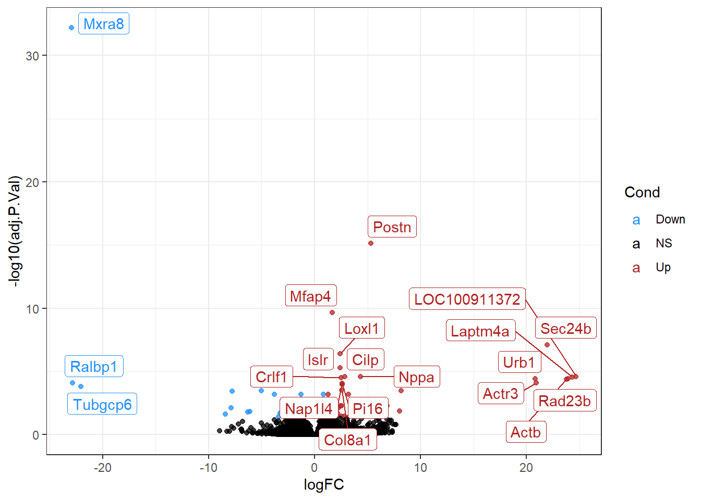

library(tidyverse)
library(clusterProfiler)
library(AnnotationDbi)
library(org.Rn.eg.db)RNAseq - Luana
Packages
Data
DEG_tab <- readr::read_csv(file = "Data/LUANA_SigGene_EAO_vs_Control_Result_1.csv")
exp_mat <- readxl::read_xlsx(path = "Data/Normalized DATA_LUANA.xlsx")
group_dict <- readr::read_tsv(file = "Data/METADATA LUANA.txt")Tidy the data
exp_mat_tidy <- exp_mat %>%
pivot_longer(cols = -`...1`,names_to = "cols",values_to = "vals") %>%
left_join(mutate(group_dict, rep = c(1:3,1:5,1:5,1:3)),by = c("cols" = "#NAME")) %>%
mutate(new_col = glue::glue("{SampleGroup}_{rep}")) %>%
dplyr::select(-cols, -SampleGroup, -rep) %>%
pivot_wider(names_from = new_col, values_from = vals) %>%
dplyr::rename(entrezid = 1)DEG
#keytypes(org.Rn.eg.db)
symbols <- select(x = org.Rn.eg.db,
keys = as.character(DEG_tab$EntrezID),
columns = c("ENTREZID","SYMBOL","ENSEMBL"),
keytype = "ENTREZID")'select()' returned 1:many mapping between keys and columnsDEG_tab_cond <- DEG_tab %>%
mutate(Cond = case_when(
logFC > 1 & adj.P.Val < 0.05 ~ "Up",
logFC < 1 & adj.P.Val < 0.05 ~ "Down",
TRUE ~ "NS"
))
DEG_tab_cond_top20 <- DEG_tab_cond %>%
slice_min(order_by = adj.P.Val,n = 20,with_ties = T)
DEG_tab_cond %>%
ggplot(aes(x = logFC, y = -log10(adj.P.Val))) +
geom_point(aes(color = Cond), alpha = .75) +
scale_color_manual(values = c("dodgerblue","black","firebrick")) +
ggrepel::geom_label_repel(data = DEG_tab_cond_top20, aes(x = logFC, y = -log10(adj.P.Val), label = Symbols, color = Cond),max.overlaps = 30) +
theme_bw()
Enrichment
#keytypes(org.Rn.eg.db)
DEG_symbols <- DEG_tab_cond %>%
dplyr::filter(Cond != "NS") %>%
pull(Symbols)
DEG_entrezid <- DEG_tab_cond %>%
dplyr::filter(Cond != "NS") %>%
pull(EntrezID)
GO <- enrichGO(gene = DEG_symbols,
OrgDb = org.Rn.eg.db,
keyType = "SYMBOL",
ont = "ALL",
pvalueCutoff = .05,
pAdjustMethod = "BH")
readr::write_csv(x = GO@result,file = "Output/geneontology_EAO_vs_Control.csv")# #Rodar na delta
# tmp <- bitr_kegg(as.character(DEG_entrezid),fromType = "kegg",toType = "ncbi-geneid",organism = "rno")
# KEGG <- enrichKEGG(gene = as.character(DEG_entrezid),
# organism = "rno",
# keyType = "kegg")